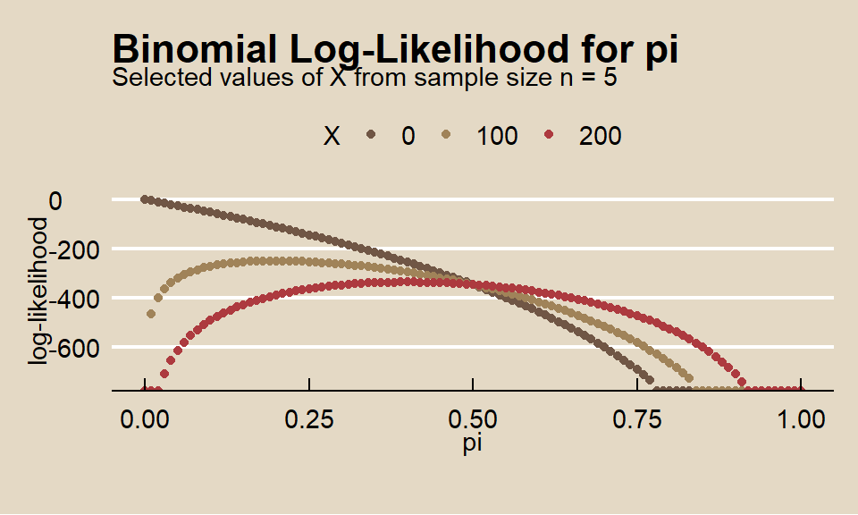
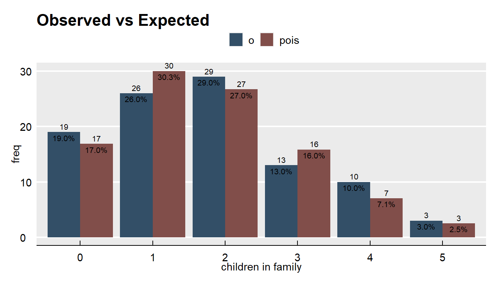
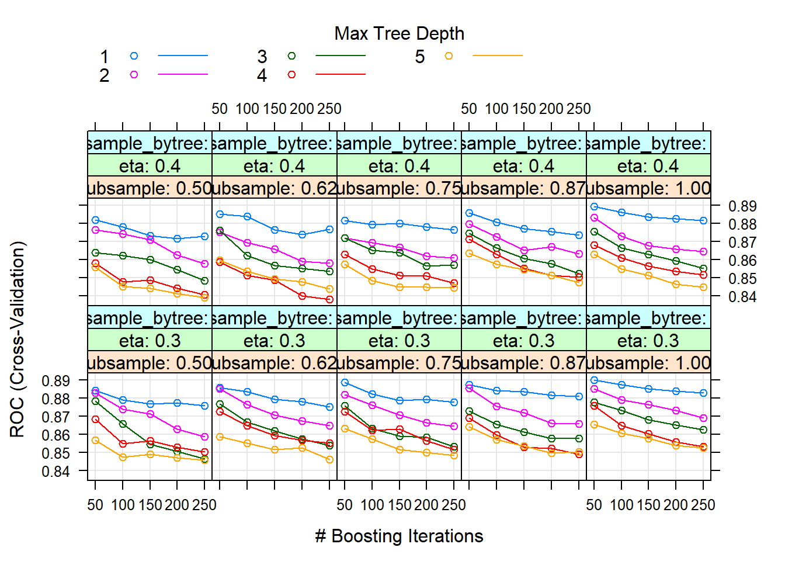

4.2 One-Way Tables
These notes rely on PSU STATS 504 course notes.
A one-way table is a frequency table for a single categorical variable. You usually construct a one-way table to test whether the frequency counts differ from a hypothesized distribution using the chi-square goodness-of-fit test. You may also simply want to construct a confidence interval around a proportion.
Here is an example. A researcher crosses tall cut-leaf tomatoes with dwarf potato-leaf tomatoes, then classifies the (\(n = 1,611\)) offspring phenotypes.
o <- c(926, 288, 293, 104)
cell_names <- c("tall cut-leaf", "tall potato-leaf", "dwarf cut-leaf", "dwarf potato-leaf")
names(o) <- cell_names
print(o)## tall cut-leaf tall potato-leaf dwarf cut-leaf dwarf potato-leaf
## 926 288 293 104The four phenotypes are expected to occur with relative frequencies 9:3:3:1.
## [1] 0.562 0.188 0.188 0.062## tall cut-leaf tall potato-leaf dwarf cut-leaf dwarf potato-leaf
## 906 302 302 101data.frame(O = o, E = e) %>%
rownames_to_column(var = "i") %>%
pivot_longer(cols = -i, values_to = "freq") %>%
group_by(name) %>%
mutate(pct = freq / sum(freq)) %>%
ungroup() %>%
ggplot(aes(x = i, y = freq, fill = name,
label = paste0(round(freq, 0), "\n",
scales::percent(pct, accuracy = 0.1)))
) +
geom_col(position = position_dodge()) +
geom_text(position = position_dodge(width = 0.9), size = 2.8) +
theme_mf() +
scale_fill_mf() +
labs(title = "Observed vs Expected", fill = "")
Do the observed phenotype counts conform to the expected proportions? This is a goodness-of-fit question because you are comparing frequencies from a single categorical variable to a set of hypothesized frequencies.
4.2.1 Chi-Square Goodness-of-Fit Test
The chi-square goodness-of-fit test tests whether observed frequency counts \(O_j\) of the \(J\) levels of a categorical variable differ from expected frequency counts \(E_j\) in a sample. \(H_0\) is \(O_j = E_j\).
There are two possible test statistics for this test, Pearson \(X^2\) and deviance \(G^2\). The sampling distributions of \(X^2\) and \(G^2\) approach the \(\chi_{J-1}^2\) as the sample size \(n \rightarrow \infty\). It’s a good idea to calculate both test statistics.
The Pearson goodness-of-fit statistic is
\[X^2 = \sum \frac{(O_j - E_j)^2}{E_j}\]
where \(O_j = p_j n\) and \(E_j = \pi_j n\). The deviance statistic is
\[G^2 = 2 \sum O_j \log \left[ \frac{O_j}{E_j} \right]\]
If the saturated model (the observed data represent the fit of the saturated model, the most complex model possible with the data) proportions \(p_j\) equal equal the expected proportions \(\pi_j\), \(X^2\) and \(G^2\) will equal zero. Large values indicate the data do not agree well with the proposed model.
You can perform a chi-square test of significance with the \(G^2\) and \(X^2\) test statistics with \(dof\) degrees of freedom (d.f.). The chi-square test is reliable when at least 80% of \(E_j >= 5\).
Calculate \(X^2\) as x2 <- sum((o - e)^2 / e) = 1.47 and the \(G^2\) as g2 <- 2 * sum(o * log(o / e)) = 1.48. The degrees of freedom are length(o) - 1 = 3. The chi-sq test p-values are nearly identical.
## [1] 0.69## [1] 0.69chisq.test() performs the chi-square test of the Pearson test statistic.
##
## Chi-squared test for given probabilities
##
## data: o
## X-squared = 1, df = 3, p-value = 0.7The p-values based on the \(\chi^2\) distribution with 3 d.f. are about 0.69, so the test fails to reject the null hypothesis that the observed frequencies are consistent with the theory. The plot of the chi-squared distribution shows \(X^2\) well outside the \(\alpha = 0.05\) range of rejection.
alpha <- 0.05
dof <- length(e) - 1
lrr = -Inf
p_val <- pchisq(q = x2, df = length(o) - 1, lower.tail = FALSE)
urr = qchisq(p = alpha, df = dof, lower.tail = FALSE)
data.frame(chi2 = seq(from = 0, to = 20, by = .1)) %>%
mutate(density = dchisq(x = chi2, df = dof)) %>%
mutate(rr = ifelse(chi2 < lrr | chi2 > urr, density, 0)) %>%
ggplot() +
geom_line(aes(x = chi2, y = density), color = mf_pal(12)(12)[12], size = 0.8) +
geom_area(aes(x = chi2, y = rr), fill = mf_pal(12)(12)[2], alpha = 0.8) +
geom_vline(aes(xintercept = x2), color = mf_pal(12)(12)[11], size = 0.8) +
labs(title = bquote("Chi-Square Goodness-of-Fit Test"),
subtitle = paste0("X^2=", round(x2,2), ", ",
"Critical value=", round(urr,2), ", ",
"p-value=", round(p_val,3), "."
),
x = "chisq",
y = "Density") +
theme(legend.position="none") +
theme_mf()
If you reject \(H_0\), you can inspect the residuals to learn which differences may have lead to rejecting the rejection. \(X^2\) and \(G^2\) are sums of squared cell comparisons, or “residuals”. The expected value of a \(\chi^2\) random variable is its d.f., \(k - 1\), so the average residual size is \((k - 1) / k\). The typical residual should be within 2 \(\sqrt{(k - 1) / k}\).
data.frame(e2_res) %>%
rownames_to_column() %>%
# pivot_longer(cols = e2_res:g2_res) %>%
ggplot(aes(x = rowname, y = e2_res)) +
geom_point(size = 3, color = mf_pal(12)(12)[2], alpha = 0.8) +
theme_mf() +
labs(title = "X^2 Residuals by Cell", color = "", x = "", y = "")
If you want to test whether the data conform to a particular distribution instead of some set of theoretical values, the test is nearly the same except for an adjustment to the d.f. Your first step is the estimate the distribution’s parameter(s). Then you perform the goodness of fit test, but with degrees of freedom reduced for each estimated parameter.
For example, suppose you sample \(n = 100\) families and count the number of children. The count of children should be a Poisson random variable, \(J \sim Pois(\lambda)\).
The ML estimate for \(\lambda\) is
\[\hat{\lambda} = \frac{j_0 O_0 + j_1 O_1, + \cdots j_k O_k}{O}\]
## [1] 1.8The probabilities for each possible count are
\[f(j; \lambda) = \frac{e^{-\hat{\lambda}} \hat{\lambda}^j}{j!}.\]
f <- exp(-lambda_hat) * lambda_hat^dat$j / factorial(dat$j)
E <- f * sum(dat$o)
dat <- cbind(dat, e = E)dat %>%
rename(pois = e) %>%
pivot_longer(cols = -j, values_to = "freq") %>%
group_by(name) %>%
mutate(pct = freq / sum(freq)) %>%
ungroup() %>%
ggplot(aes(x = fct_inseq(as.factor(j)), y = freq, fill = name,
label = paste0(round(freq, 0), "\n",
scales::percent(pct, accuracy = 0.1)))
) +
geom_col(position = position_dodge()) +
geom_text(position = position_dodge(width = 0.9), size = 2.8) +
theme_mf() +
scale_fill_mf() +
labs(title = "Observed vs Expected", fill = "", x = "children in family")
Compare the expected values to the observed values with the \(\chi^2\) goodness of fit test. In this case, \(df = 6 - 1 - 1\) because the estimated paramater \(\lambda\) reduces d.f. by 1.
## [1] 2.8## [1] 4## [1] 0.42Be careful of this adjustment to the d.f. because chisq.test() does not take this into account, and you cannot override the d.f..
## Warning in chisq.test(dat$o, p = dat$e/sum(dat$e)): Chi-squared approximation
## may be incorrect##
## Chi-squared test for given probabilities
##
## data: dat$o
## X-squared = 3, df = 5, p-value = 0.74.2.2 Proportion Test
A special case of the one-way table is the \(2 \times 1\) table for a binomial random variable. When you calculate a single proportion \(p\), you can compare it to a hypothesized \(\pi_0\), or create a confidence interval around the estimate.
Suppose a company claims to resolve at least 70% of maintenance requests within 24 hours. In a random sample of \(n = 50\) repair requests, the company resolves \(O_1 = 33\) (\(p_1 = 66\%)\) within 24 hours. At a 5% level of significance, is the maintenance company’s claim valid?
o <- c(33, 17)
n <- sum(o)
cell_names <- c("resolved", "not resolved")
names(o) <- cell_names
print(o)## resolved not resolved
## 33 17The null hypothesis is that the maintenance company resolves \(\pi_0 = 0.70\) of requests within 24 hours, \(H_0: \pi = \pi_0\) with alternative hypothesis \(H_a: \pi < \pi_0\). This is a left-tailed test with an \(\alpha = 0.05\) level of significance.
The sample is independently drawn without replacement from <10% of the population (by assumption) and there were >=5 successes, so you can use the Clopper-Pearson exact binomial test. Clopper-Pearson inverts two single-tailed binomial tests at the desired alpha.
##
## Exact binomial test
##
## data: o
## number of successes = 33, number of trials = 50, p-value = 0.3
## alternative hypothesis: true probability of success is less than 0.7
## 95 percent confidence interval:
## 0.00 0.77
## sample estimates:
## probability of success
## 0.66There is insufficient evidence (p = 0.3161) to reject \(H_0\) that true probability of success is less than 0.7.
x <- c(0:50)
p_x <- dbinom(x = x, size = n, prob = pi_0)
observed <- factor(if_else(x == o[1], 1, 0))
data.frame(x, p_x, observed) %>%
ggplot(aes(x = x, y = p_x, fill = observed)) +
geom_col() +
theme_mf() +
scale_fill_mf() +
labs(title = "Exact Binomial")
There were >=5 failures, >=30 observations, and the measured probability of success was within (.2,.80), so you can also use the Wald normal approximation method where \(\pi = p \pm z_{\alpha/2} SE\) and \(Z = (p - \pi_0) / SE\) where \(SE = \sqrt{\pi_0 (1 - \pi_0) / n}\).
p <- o[1] / sum(o)
se <- sqrt(pi_0 * (1 - pi_0) / sum(o))
z <- (p - pi_0) / se
pnorm(q = p, mean = pi_0, sd = se, lower.tail = TRUE)## resolved
## 0.27Again, there is insufficient evidence (p = 0.2685) to reject \(H_0\) that true probability of success is less than 0.7. The 95% CI around the measured p = 0.66 is
## resolved
## 0.0 0.7